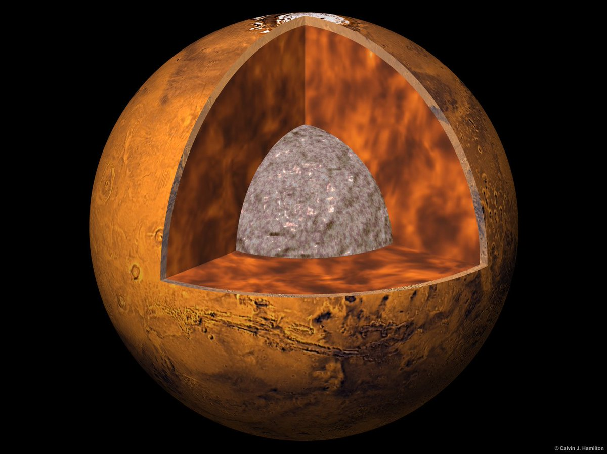

Марс — одна из наиболее изученных планет в Солнечной системе. По сравнению с Землей, на Марсе гравитация в 2,5 раза слабее. Учёные выдвигают гипотезу, что некогда на Марсе было достаточно воды и, вероятнее всего, была полноценная атмосфера. Марс — наиболее похожая на Землю планета в Солнечной системе.